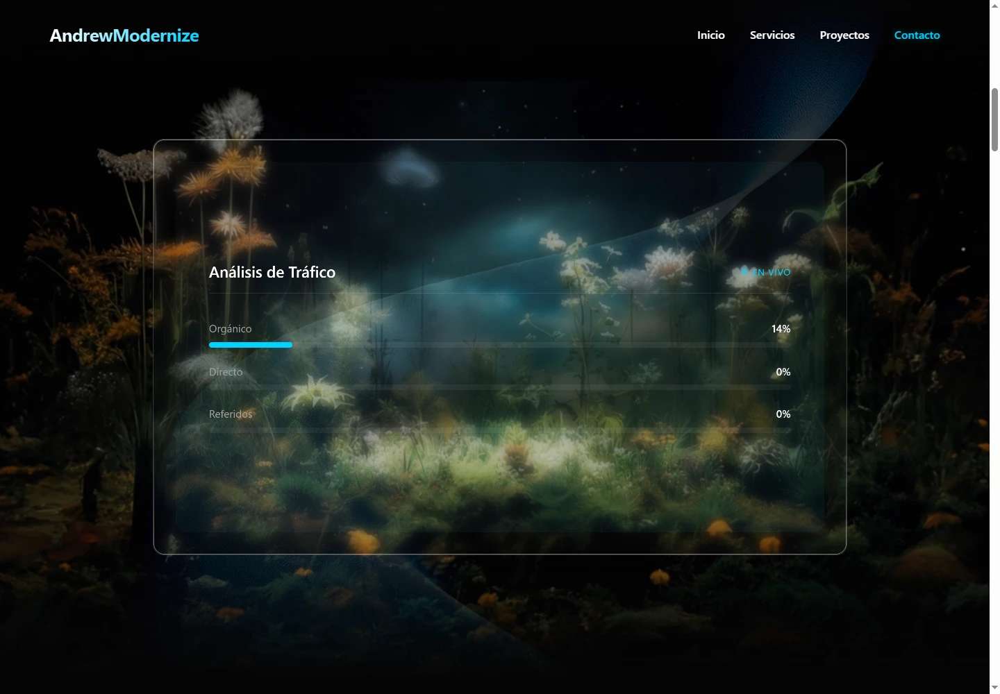
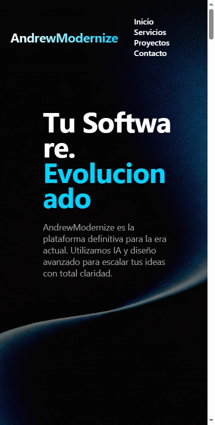

Aplicaciones web
DemoPresentación web 3D
Exploración de una página de servicios con escena tridimensional y animaciones por desplazamiento.
Qué resuelve
Exploración de una página de servicios con escena tridimensional y animaciones por desplazamiento.
Funciones implementadas
- Renderizado de escena con Three.js
- Animaciones con GSAP y ScrollTrigger
- Secciones de presentación de servicios
Demostración pública no disponible. Puedes consultar el alcance o solicitar una presentación.
Consultar sobre este proyecto ↗VISTA DEL PROYECTO
Fotografías y capturas · 3
Selecciona una imagen para ampliarla. Usa las flechas para recorrer la galería.
 Ampliar ↗
Ampliar ↗

Ampliar ↗

Ampliar ↗EN LA PRÁCTICA
Presentación por desplazamiento
- 1
Abrir la página de presentación.
- 2
Desplazarse por las secciones.
- 3
Observar la escena 3D y las animaciones de transición.
Las tarjetas comerciales no acreditan implementaciones de ERP o predicción.
Añadir fotos a este proyecto ↗
Abre primero el gestor local con python tools/manage_media.py.